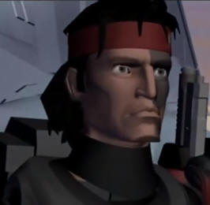
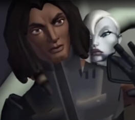
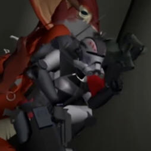
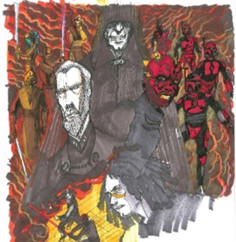
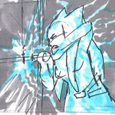

When the Clone Wars was cancelled, Season 7 was planned to be an 20 episode season and was left in multiple stages of development at the time.
Please click on a Image to go each arc's respective page:
609-612: The Bad Batch (Season 7 Episode 1-4)

After many defeats on the planet of Anaxes, Clone Force 99 AKA The Bad Batch are enlisted to help discover the cause, this leads them to an discovery that Rex had no idea was possible. (This story arc was the second out of three to be finished in 2020)
613-616: Dark Disciple (Season 7 Episode 5-8)

Tasked by the Council to Asassinate Count Dooku, Quinlan Vos recruits Bounty Hunter Asajj Ventress to the cause, little do they know their lives will be changed forever. (Forms the first half of the Novel with the same name)
617-620: Yoda & The Bad Batch on Kashyyyk (Season 7 Episode 9-12)

Yoda and Clone Force 99 are called to Kashyyyk to help the Wookies against the combined force of the CIS and the Trandoshans.
621-624: Son of Dathomir (Season 7 Episode 13-16)

Being imprisoned by Palpatine, Maul escapes and unleashes Mother Talzin's true plan, to get Revenge on Darth Sidious. (This story arc got adapted into an 4-issue comic)
701-704: Return to the Jedi (Season 7 Episode 17-20)

Discovering a terrible danger, Ahsoka Tano is forced to return to the jedi to save Yoda before its too late.
My YouTube Video on Season 7: